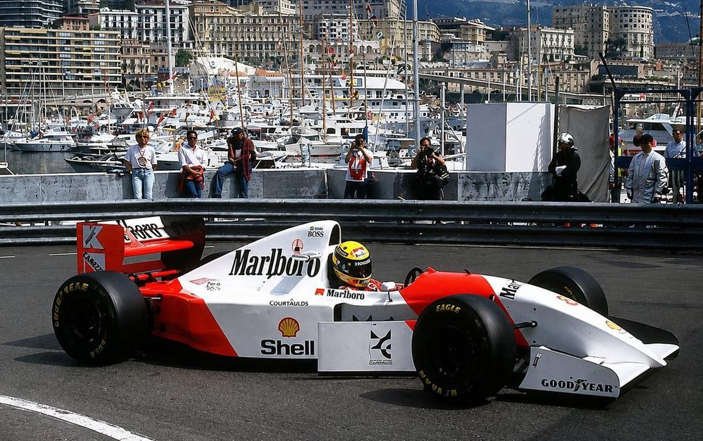
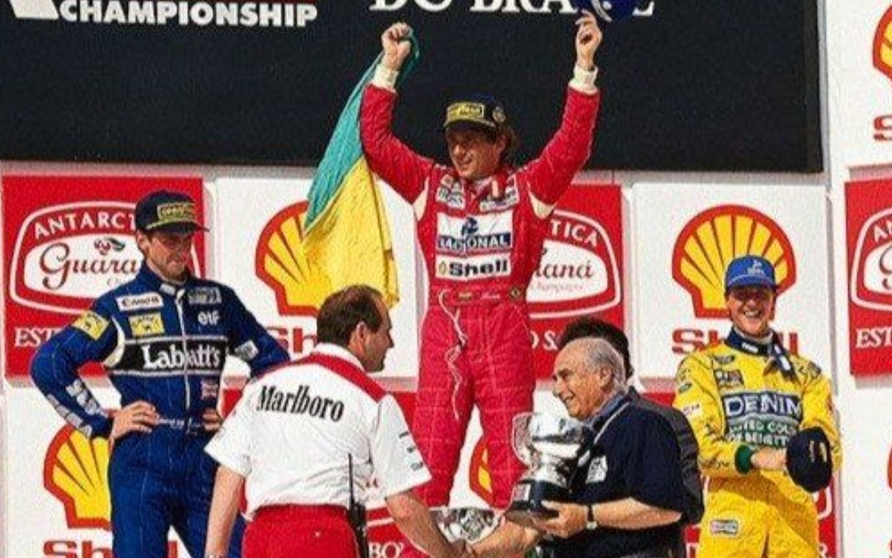
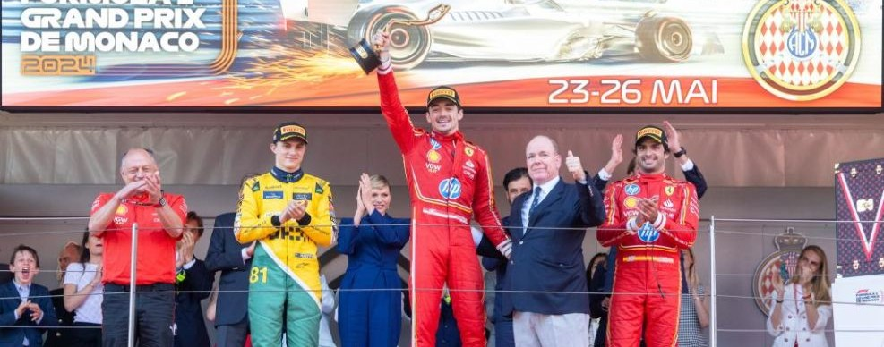

Ayrton Senna: El Rey de Mónaco

Nadie ha dominado las calles del Principado como el brasileño, quien mantiene el récord absoluto con 6 victorias en total y un histórico hilo de 5 triunfos consecutivos entre 1989 y 1993.
| Año | Escudería | Resultado |
|---|---|---|
| 1987 | Lotus-Honda | Ganador |
| 1989 - 1993 | McLaren-Honda | 5x Ganador |
Graham Hill y Michael Schumacher

Detrás de Senna, dos titanes comparten el segundo lugar histórico con 5 victorias cada uno: Graham Hill (apodado "Mr. Monaco" en los años 60) y Michael Schumacher con su implacable dominio moderno.
| Piloto | Victorias | Época Dorada |
|---|---|---|
| Graham Hill | 5 | 1963 - 1969 |
| Michael Schumacher | 5 | 1994 - 2001 |
Charles Leclerc: Destino Cumplido

Nacido y criado en el mismo asfalto del circuito, Leclerc rompió la "maldición local" en 2024 al convertirse en el primer monegasco en ganar su Gran Premio de casa en la era moderna de la Fórmula 1.
| Hito | Año | Escudería |
|---|---|---|
| Primera Pole Position | 2021 | Ferrari |
| Victoria Histórica | 2024 | Ferrari |